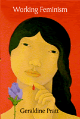

<body bgcolor="#FFFFFF" text="#000000" link="#0000FF" vlink="#CC0000" alink="#CC0000"><center><hr width="350" size="1" align="center" noshade>How feminist theory can be practically used in women's lives<hr width="350" size="1" align="center" noshade><p><a href="https://cdcshoppingcart.uchicago.edu/Cart/ChicagoBook.aspx?ISBN=9781592132638&&PRESS=temple" target="_top">Buy this book!</a> | <a href="https://cdcshoppingcart.uchicago.edu/Cart/Cart.aspx?PRESS=temple" target="_top">View Cart</a> | <a href="https://cdcshoppingcart.uchicago.edu/Cart/Cart.aspx?PRESS=temple" target="_top">Check Out</a></p><p></p></center><!--none//--><h1>Working Feminism</h1>
<h3>Geraldine Pratt</h3>
<P>cloth 1-59213-263-4 $75.50, May 04, <FONT COLOR=#990033>Available</FONT>
<br>paper 1-59213-264-2 $28.95, May 04, <FONT COLOR=#990033>Available</FONT>
<BR> 224 pp
234x156mm
</P><BLOCKQUOTE><I>"Stylish and funny, </i>Working Feminism<i> is a wonderful, original and provocative book that splices theory, practice and empirical study in a way that few works do. The research provides important insights into many of the urgent issues in social and cultural theory of the past decade and demonstrates what a geographical imagination can do for/to social theory."</i>
<br>&#151<b>Cindi Katz</b>, author of <i>Growing Up Global</i><I></I></BLOCKQUOTE>
<p><i>Working Feminism</i> looks at key concepts and debates within feminist theory and puts them to work concretely in relation to the real problems faced by Filipina domestic workers and Asian youth in Canada. Geraldine Pratt draws to the fore the metaphorical and concrete geographies that lie implicit and underdeveloped within much feminist theory and suggests that a geographical imagination offers a means of reframing debates beyond polarized theoretical and political positions. Alternating between theoretical and empirical chapters, substantial and wide-ranging discussions of human rights, multiculturalism, and feminist politics are brought down to earth and&#151by putting them into the context of individual predicaments&#151to life. The empirical chapters situate and describe a decade-long collaboration by an activist group&#151the Philippine Women Centre&#151and demonstrate the fruits of a close and innovative engagement between poststructuralist feminist theory and a participatory action project.
<BR>&nbsp;<h2>Excerpt</h2><P>Excerpt available at <a href="http://www.temple.edu/tempress">www.temple.edu/tempress</a></p>
<BR>&nbsp;<h2>Reviews</h2>
<p><i>"Pratt's scholarly presentation makes an important contribution toward understanding the problems faced by many female migrant workers, not just Filipinas... Highly recommended."</i>
<br>&#151<b><i>Choice</i></b>
<p><i>"[H]ighly interesting... Pratt does an excellent job of delineating the critiques of feminist theory, and addressing each in terms of the potentials of feminist geography... [She] has definitely made much-needed contributions to poststructural feminist theory."</i>
<br>&#151<b><i>Working USA</i></b>
<p><i>"Geraldine Pratt is an engaging, humorous, and provocative writer.... </i>Working Feminism<i> is a must-read for researchers who are interested in the politics and messiness of community collaborations; advocates and critics of feminist post-structural theories who want to see ways that theory can actively engage with the material; and feminists from other disciplines who want to gain a deeper understanding of an appreciation for the insights that a geographical imagination can bring to feminist theory."</i>
<br>&#151<b><i>Gender, Place, and Culture</i></b>
<p><i>"This is an exhilarating book that seeks to put feminist theory 'to work' on complex difficulties encountered by marginalized women. ...There is not enough space here to elaborate on all the admirable qualities of </i>Working Feminism<i>...the prose is accessible and inviting. Student and scholars alike will find sections of this book that they will savor and puzzle over precisely because Pratt generously provides many theoretical openings throughout the text."</i>
<br>&#151<b><i>Economic Geography</i></b>
<p><i>"The scope of the book is impressive.... </i>Working Feminism<i> provides a fascinating analysis of social and cultural theory from a feminist perspective using a geographical lens to re-examine debates that are familiar in different contexts. The wide-ranging theoretical debates discussed throughout...make this a highly original book."</i>
<br>&#151;<b><i>Geografiska Annaler, Series B: Human Geography</i></b>
<p><i>"[A] compelling read...She seeks to show how feminist engagements with poststructuralist theory can be made to elucidate these dynamics and dilemmas in ways that are highly relevant to the politically engaged researcher…</i>Working Feminism<i> offers many rewards...it richly deserves [wide circulation] among graduate students and should ensure its place on the shelves of the libraries of smaller institutions as well as those of universities at the top of the hierarchy of ‘knowledge production.’"</i>
<br>&#151<b><i>Environment and Planning D: Society and Space</i></b>
<p><i>"The empirical chapters are absolutely the strength of the book, and her case study is a perfect one for the hotbutton issues of the day....Pratt [strengthens] her position as one of the most thoughtful and sophisticated feminist geographers working today. Pratt expands our understanding of the theory that can inform feminist research...With </i>Working Feminism<i>, Pratt has done an admirable job."</i>
<br>&#151<b><i>Annals of the Association of American Geographers</i></b>
<BR>&nbsp;<h2>Contents</h2><P>
<p>List of Figures
<br>Acknowledgements
<br>1. Putting Feminist Theory to Work
<br>2. Spatialising the Subject of Feminism
<br>3. From Registered Nurse to Registered Nanny
<br>4. Liberalism, Universalisms and Democratic Feminist Politics
<br>5. Working at the Borders of Liberalism
<br>6. Gleaning the Home
<br>7. Trafficking across Borders
<br>8. Songs Flies Home
<br>References
<br>Index
</P><BR>&nbsp;<H2>About the Author(s)</H2>
<P><b>Geraldine Pratt</b> is Professor of Geography at the University of British Columbia. She is editor of <I>Society and Space</I> and co-editor of <I>The Dictionary of Human Geography</I>, 4th edition, and has published extensively in feminist and cultural geography and theory.</P>
<BR><H2>Subject Categories</H2>
<p><A HREF="/tempress/women.html" TARGET="_top">Women's Studies</a>
<BR>
<BR><A HREF="/tempress/asian_amer.html" TARGET="_top">Asian American Studies</a>
</p>
<p align="center"><a href="https://cdcshoppingcart.uchicago.edu/Cart/ChicagoBook.aspx?ISBN=9781592132638&&PRESS=temple" target="_top">Buy this book!</a> | <a href="https://cdcshoppingcart.uchicago.edu/Cart/Cart.aspx?PRESS=temple" target="_top">View Cart</a> | <a href="https://cdcshoppingcart.uchicago.edu/Cart/Cart.aspx?PRESS=temple" target="_top">Check Out</a></p><p><font face="Arial" size="1"><a href="copyright.html" onMouseOver="window.status='Web Copyright Policy';return true;" onMouseOut="window.status=''" title="Web Copyright Policy">&copy;</a> 2015 <a href="http://www.temple.edu" target="new" onMouseOver="window.status='Link to Temple University home page';return true;" onMouseOut="window.status=''" title="Link to Temple University home page">Temple University</a>. All Rights Reserved. http://www.temple.edu/tempress/titles/1754_reg.html</font></p>